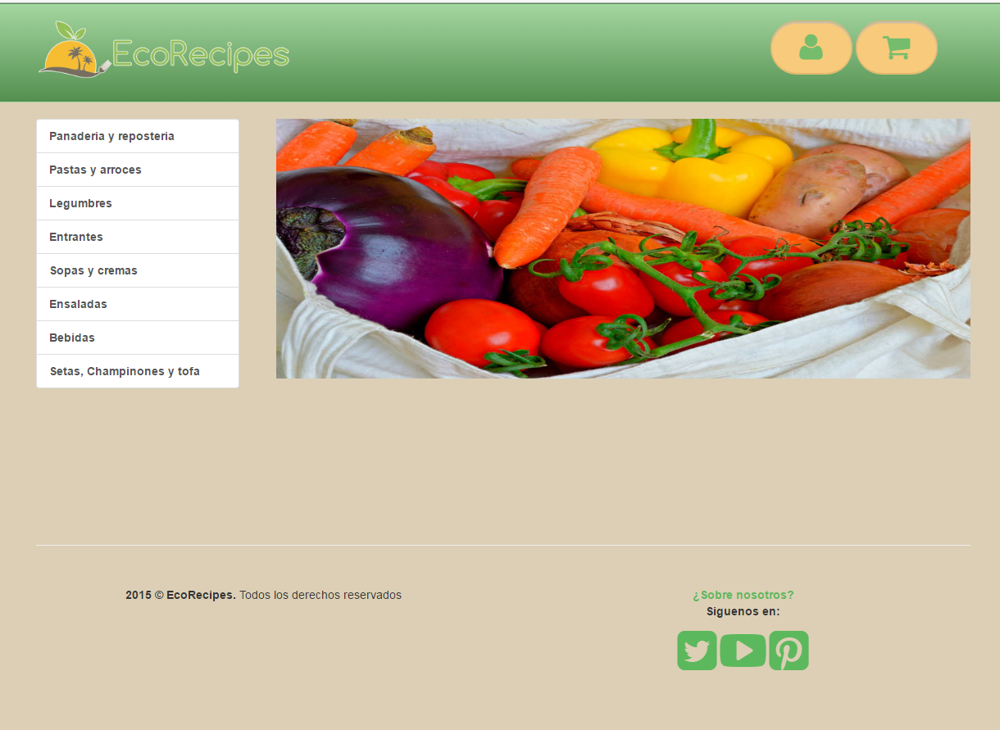
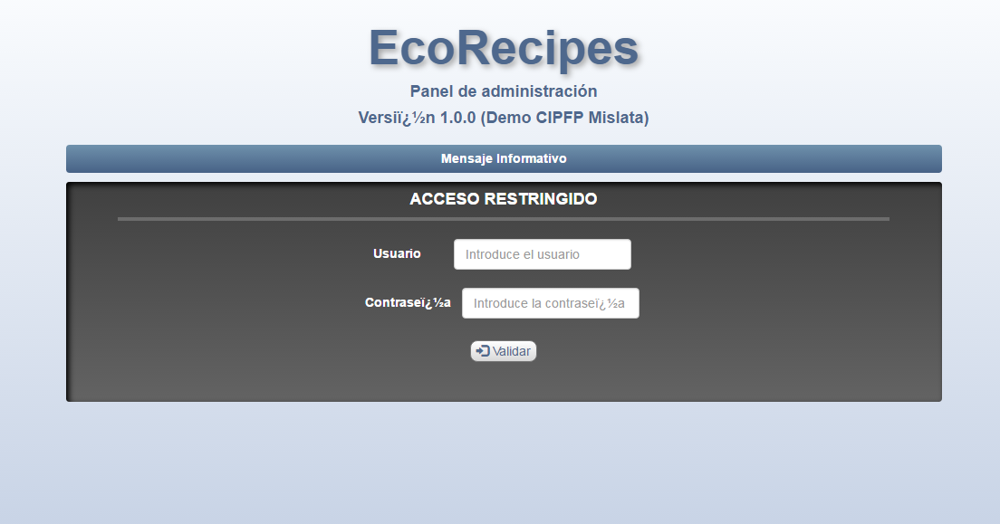
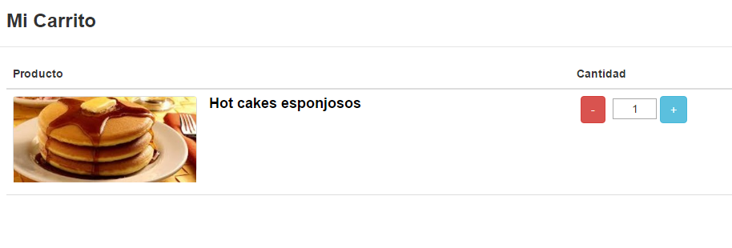
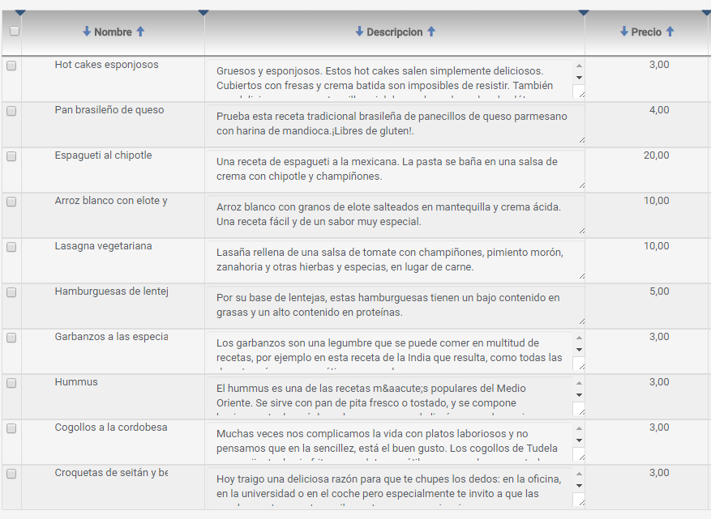
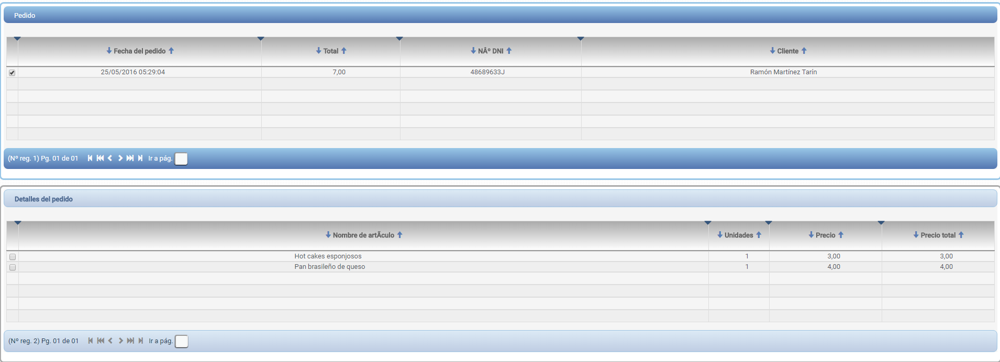
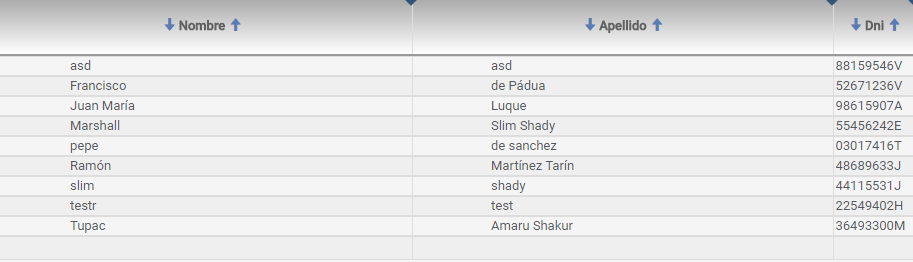
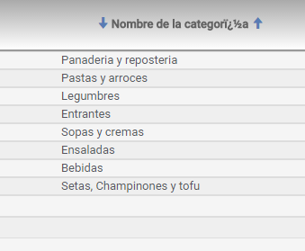

Proyecto Final de Grado
Desarrollo de Aplicaciones Web
Alumno: Ramón Martínez Tarín
"EcoRecipes, una tienda online de recetas ecológicas y vegetarianas"
Índice:
- ¿Qué es EcoRecipes?
- Idea de negocio
- ¿De qué se conforma?
- Funcionalidades
- Herramientas y tecnologías
- Metodología de trabajo
- Propuestas de mejora
- Mejoras relativas a la funcionalidad
- Mejoras relativas al código
¿Qué es EcoRecipes?
Idea de negocio
Tienda de recetas ecológicas y vegetarianas.
No enviamos el plato hecho, sino los ingredientes.
Instrucciones detalladas de elaboración.
¿De qué se conforma?
Frontend
Backend
Funcionalidades
¡Ahora con gvHIDRA!
Compra de productos
Gestión de artículos
Gestión de pedidos
Gestión de clientes
Gestión de categorías
Herramientas y tecnologías
Hosting y automatización

Jenkins
Amazon Web Services
Tecnologías del Frontend

HTML5
CSS3
jQuery
SweetAlert
Tecnologías del Backend
gvHIDRA
PHP
cURL
¿Porqué uso gvHIDRA?
Es una herramienta RAD.
Generación de código.
Es un proyecto muy maduro.
Es Open Source.
Me ha servido para mis FCT.
Metodología de trabajo
SCRUM
Metodología ágil.
Útil para proyectos inestables.
Hace que se puedan cambiar las cosas en cualquier momento.
Se planifica sobre la realidad, y no sobre la fantasía.
Valoración personal
Relación amor/odio.
Muy práctico para la enseñanza en FP.
Los equipos deben estar perfectamente coordinados.
Las estimaciones nunca son precisas.
La calidad de los miembros del equipo influye enormemente en la calidad del producto.
Propuestas de mejora
Mejoras funcionales
Activación de cuenta (tras el registro con captcha).
Sistema de feedback.
Seguimiento de los pedidos.
Cupones de descuento para clientes habituales.
Suscripción premium.
Mejoras sobre el código
Utilizar el patrón DAO.
Utilizar un ORM para la parte de persistencia.
Cambiar los controladores por controladores RESTful.
Implementar una capa de servicios.
Mejorar el manejo de errores.
¡Gracias por todo!